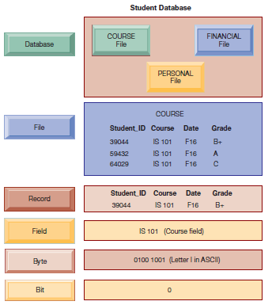

BIG DATA &
Ciência de Dados
Alunos:
Tiago Matos
Victor Bonin
Demônio de Laplace
“Devemos considerar o estado atual do universo como o efeito de seu estado anterior e como a causa do estado posterior. Um ser inteligente que conheça todas as forças que atuam na natureza em um determinado instante, bem como as posições momentâneas de todas as coisas no universo, seria capaz de compreender, em uma única fórmula, os movimentos dos maiores corpos e os átomos mais leves do universo”
- Laplace
Princípio da Incerteza
“Estabelece que não podemos medir com precisão duas variáveis complementares de uma partícula, ou seja, quanto mais precisamente tentamos medir a posição de uma partícula, menos precisamente conseguimos medir sua velocidade e vice-versa. Desse modo, as medições de posição, momento linear, carga, elétrica, velocidade, impulso, rotação e outras seriam cada vez menos precisas”
- Heisenberg
Ordem ou Caos?

Dados
São sinais não processados. Podem ser compostos de números, sinais elétricos, palavras, sons, imagens
Informação
Atribuição de significado aos dados
Referência
Conhecimento
Significa a conexão das informações dando um sentido mais amplo
Referência
Como organizar?

SGBD
Sistema de gerenciamento de banco de dados
Estrutura de dados
Tipos de dados


Como sobreviver?

Enfim
Data Science
Referencia
Processos em Data Science
Entrada
Processamento
Saída
Referencia